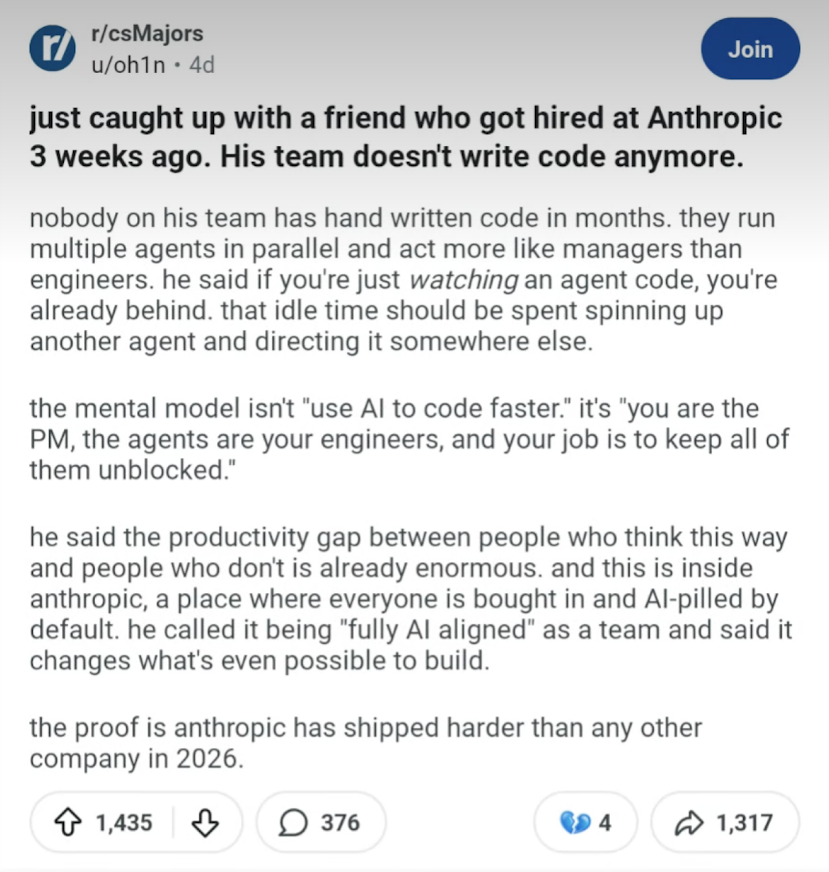

$ ./agilize --talk 2026
Pare de Codar.
Comece a _
O papel de quem constrói tecnologia nunca mais será o mesmo.

Se isso já é verdade
na Anthropic,
quanto tempo até ser verdade
em todo lugar?
A Jornada
Da era das cavernas ao fogo
A Idade da Pedra
do Desenvolvimento
Código bruto. Linha por linha. Caractere por caractere.
Stack Overflow era a biblioteca de Alexandria.
Copiar e colar de fórum era técnica avançada.
O valor de um dev se media pela capacidade de produzir código manualmente.
Os Primeiros Sinais
"Isso é muleta" — "Dev de verdade não precisa disso"
Essa resistência se repetiu em cada nova onda.
A Chegada do Copilot
Curiosos
Experimentando, testando, aprendendo
Céticos
"Vai gerar código ruim"
"Vai criar dependência"
"É plágio"
O mercado se dividiu. A resistência era real.
Enquanto isso,
na Agilize...
Decidimos experimentar antes de julgar.
Coisas que levariam semanas saindo em dias.
Problemas complexos resolvidos em horas.
A Descoberta do Fogo
Quando a IA parou de ser assistente
e começou a trabalhar de verdade.
Não só sugerindo código enquanto a gente digitava — mas pegando uma tarefa e executando do início ao fim.
A barreira não foi técnica.
Foi cultural.
"Será que vai fazer certo?"
"Eu deveria estar acompanhando..."
"E se der ruim?"
Gerações de devs foram treinadas pra acreditar que o valor está em escrever o código.
O valor está em resolver problemas.
O Mundo Hoje
Uma parte enorme do mercado ainda está descobrindo o fogo.
A velocidade da mudança acelerou. E a distância só aumenta.
O gap de produtividade
A diferença entre quem orquestra cinco agentes em paralelo
e quem ainda escreve código linha por linha
não é de 20%. É de ordens de magnitude.
O que fez diferença?
A disposição de experimentar mesmo com medo.
De ajustar a cultura mesmo quando era desconfortável.
De aceitar que o jeito antigo de trabalhar
não era sagrado.
Essa disposição é o que separa quem lidera de quem corre atrás.
A Virada
De executor para orquestrador
Antes
Como eu faço isso?
IA como ferramenta. Você no centro. Executando.
Agora
Como eu orquestro isso?
Agente executa. Você orquestra. Múltiplos em paralelo.
Você é o PM.
Os agentes são seus engenheiros.
Seu trabalho: manter todos desbloqueados.
Isso vale pra todo mundo. Dev, PM, designer, analista.
Quem aprender a orquestrar multiplica sua capacidade.
Benchmark
O que o mercado está dizendo
Dados da Anthropic — 2026
Esses ganhos estão se tornando o novo baseline de competitividade.
Cases Reais
O que já fizemos na Agilize
Demo ao Vivo
Orquestração de agentes aplicada na prática dentro da Agilize.
Demo ao vivo.
Demo ao Vivo
Mais um exemplo concreto de como a orquestração de agentes está transformando o que é possível fazer na Agilize.
Demo ao vivo.
O Clone do Jira
Um sistema completo que vai substituir o Jira na empresa. Construído com apenas duas horas de trabalho pessoal.
Não foram duas horas seguidas de código. Foram shots curtos de 5 a 15 minutos de orquestração. Agentes autônomos rodando em paralelo, executando enquanto cuidava de outras coisas.
Você não fica assistindo o agente trabalhar. Você dispara outro agente enquanto o primeiro executa.
Programação por Voz
Comandos falados pelo Telegram viram tarefas executadas por agentes.
O teclado se torna opcional.
Programar andando. Programar dirigindo. Programar enquanto faz outra coisa.
O limite deixa de ser a velocidade de digitação e passa a ser a clareza do pensamento.
Um Card. Um Prompt.
Um card do Jira resolvido integralmente com um único prompt.
Sem intervenção manual no código. O agente entendeu o contexto, analisou o problema, implementou a solução e entregou.
Saber pedir é tão importante quanto saber fazer.
Agilify: O Clone do Pipefy
Construído sozinho por um CPO. Não é dev de formação. Não tem time dedicado.
Orquestrou agentes e entregou um produto completo.
Impacto financeiro: economia de R$ 3 milhões para a Agilize.
A capacidade de construir não está mais restrita a quem sabe programar.
Está disponível pra quem sabe orquestrar.
Deep Study
Como a Anthropic constrói software
Dados reais do time da Anthropic
Workflow
Times "fully AI aligned". Múltiplos agentes rodando em paralelo. Engenheiros como gerentes de projeto dos agentes.
Resultado
A Anthropic shipando mais que qualquer outra empresa em 2026. Não é coincidência. É consequência.
Como Começar
Recursos para a audiência
A barreira não é acesso.
A barreira é decidir começar.
Quanto mais cedo começar, maior a vantagem acumulada.
O Futuro
Grupo de pesquisa científica
O Coração Não Pode Parar
Manter a Agilize funcionando e evoluindo com excelência enquanto a liderança técnica mergulha na pesquisa.
Assumindo as funções de Adriano e Viana na operação
Grupo de Pesquisa Científica
Dedicação de 100% do tempo a explorar em profundidade o novo paradigma. Por tempo indeterminado.
Dedicação parcial — mantendo o coração batendo
A lâmpada ainda não foi inventada.
Mas já dá pra ver a faísca.
Os modelos vão melhorar. As ferramentas vão amadurecer. Quem começar agora vai estar anos à frente.
Isso não é o ponto de chegada. É o ponto de partida.
Estamos num ponto de inflexão
da história da tecnologia.
Investir em entender profundamente esse novo mundo não é opcional — é estratégico.
A Agilize está se posicionando pra liderar, não pra correr atrás.
O mundo mudou.
Não é mudança que vai acontecer.
É mudança que já aconteceu.
O post do Reddit não é previsão — é relato do presente.
// EOF — Pare de Codar. Comece a Orquestrar. — Agilize 2026